Fun With Diffusion Models!
This project aims to explore Diffusion Models.
Part 0: Setup
4 sections in totalThis part aims to play with DeepFloyd, which is a two stage diffusion model trained by Stability AI. The first step I did is to create some imaginative prompts, and encode them to vectors using T5 Text Encoder Embeddings Generator. I created 11 prompts, as shown below in the generator's website:
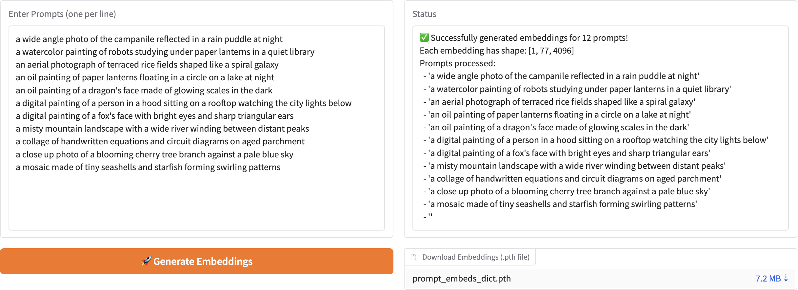the prompts-
Then I fed the embedded vectors to DeepFloyd, with random seed = 100. The following are three sets of results
--------------------------------------------------------------------------------------------------------------------------
Prompt: "a wide angle photo of the campanile reflected in a rain puddle at night"
Reflect: The three pictures are all clear, and they all matches the key words in prompt: wide angle/campanile/reflect/rain puddle/night. As the inference steps grow, the pictures gradually contain more details (because the model can diffuse more noise), and the angles of camera becomes wider.
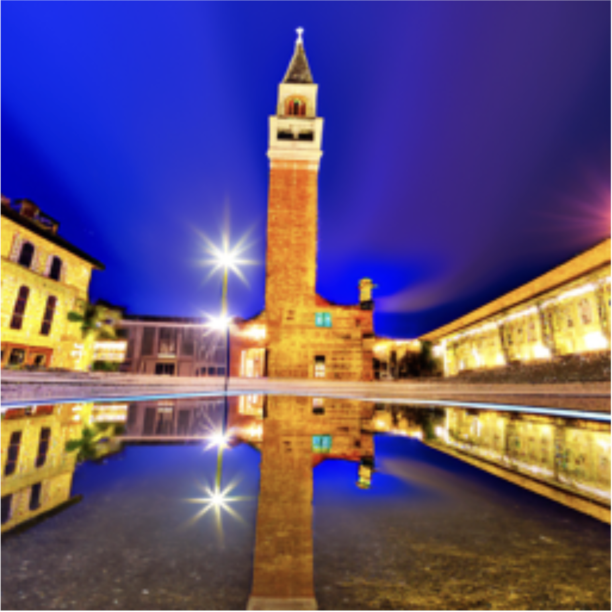20 num_inference_steps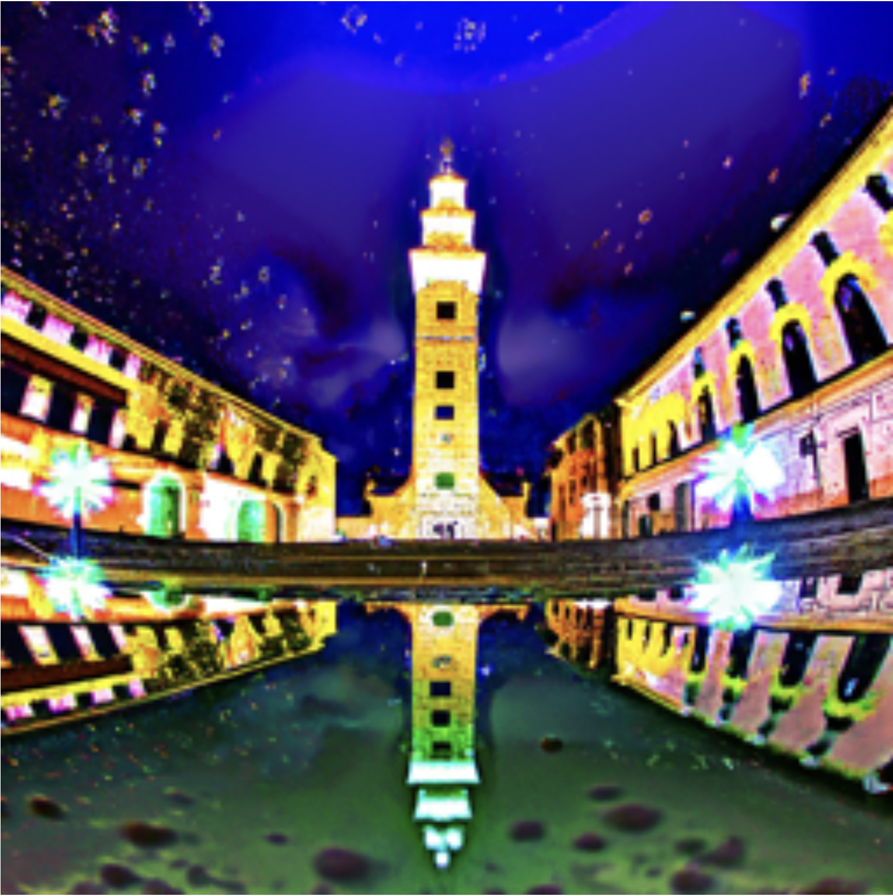40 num_inference_steps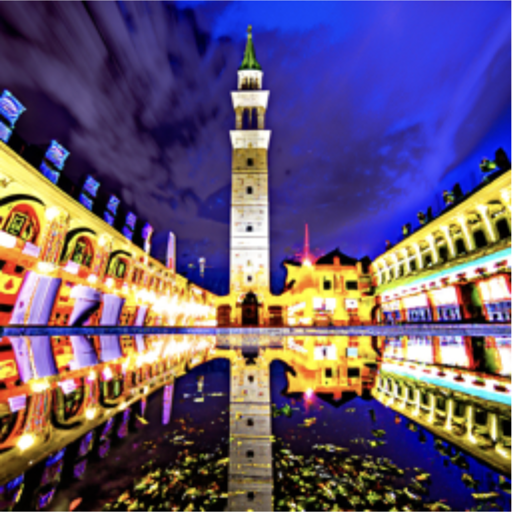80 num_inference_stepsPrompt: "a watercolor painting of robots studying under paper lanterns in a quiet library"
Reflect: All three pictures didn't manage to obey all the instructions in the prompt: Only the third picture captures the detail "paper lanters", and only the second image captures the detail "library", but it doesn't show the keyword "studying". The robots tend to have wrong number of legs, and their hands can't be characterized well. But anyway, at least all three pictures follow the instruction of "watercolor painting" and "robotics", and overall, the images are clear, with more details added as the inference steps grow, which aligns the observation in the first set of images.
20 num_inference_steps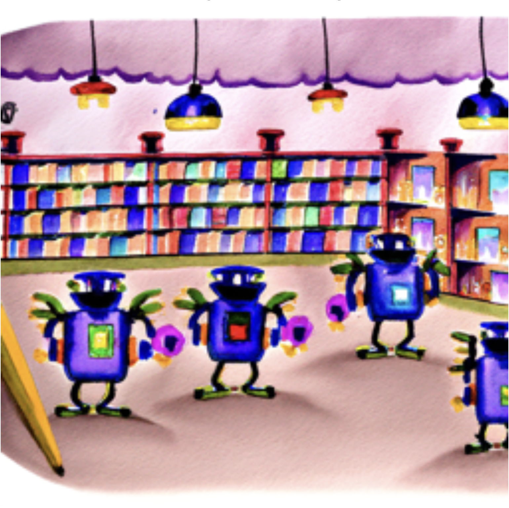40 num_inference_steps 80 num_inference_steps
80 num_inference_stepsPrompt: "an aerial photograph of terraced rice fields shaped like a spiral galaxy"
Reflect: The terraced rice fields are more and more shaped like a spiral galaxy as the inference steps grow, indicating that the model could better understand the semantic in the prompt as the inference time becomes longer. Overall, the three images all obeys the instructions in the prompt, and are all clear without distinct noise。
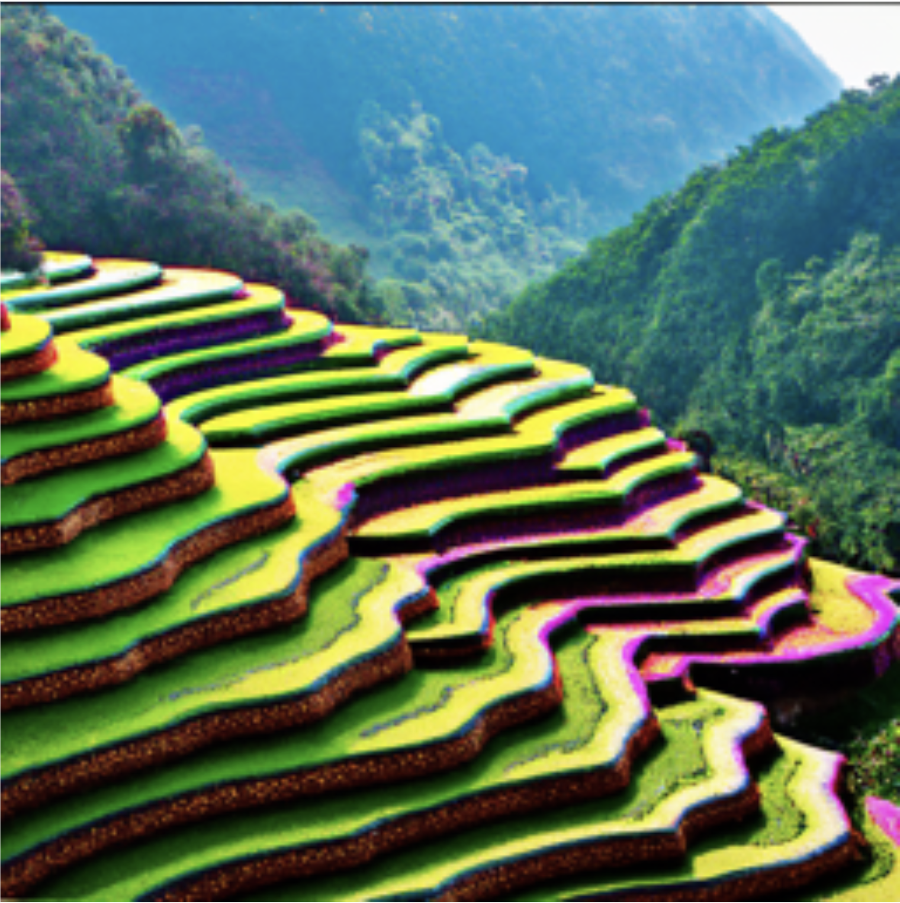20 num_inference_steps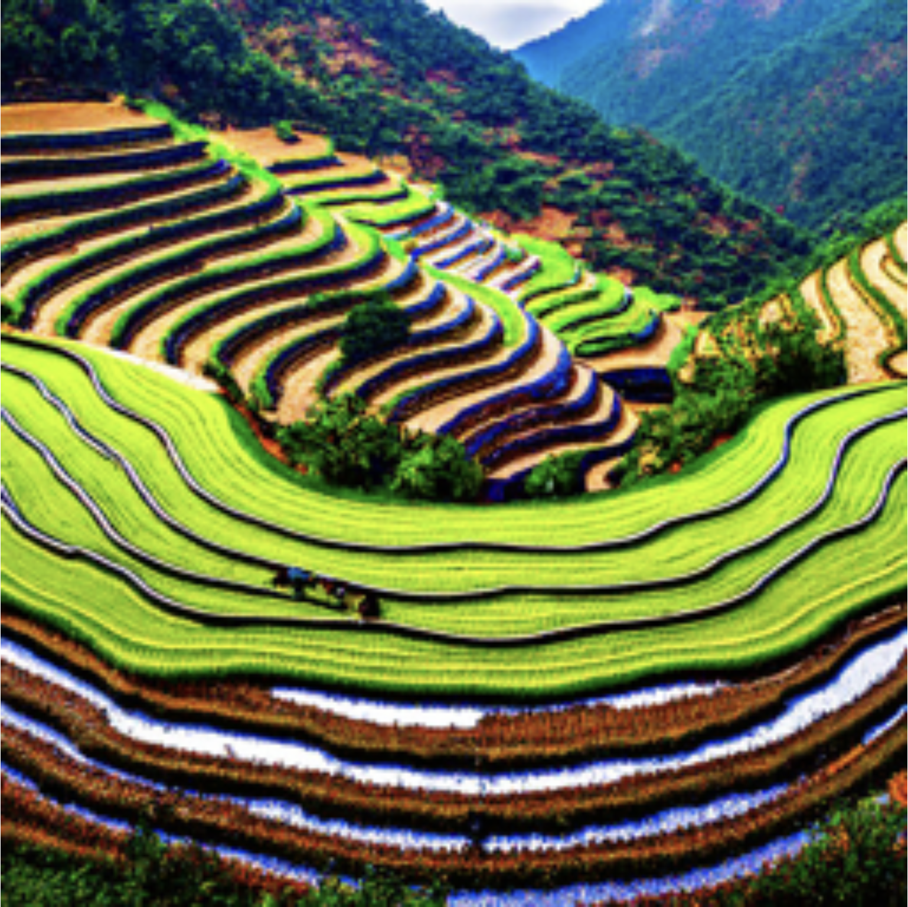40 num_inference_steps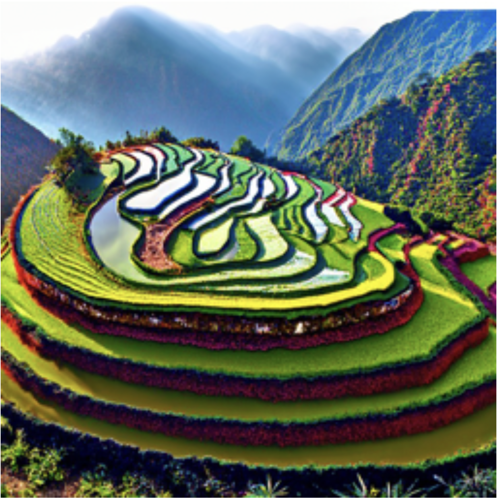80 num_inference_steps
Part 1: Sampling Loops
9 section in totalThe following demonstrates a simple fwd proc of diffusion sampling
Here is the critical part of the forward(im, t) function: choose an alpha, sqrt the alpha , generate a pure noise img, and merge the noise img and the orignal img in a weighted way according to alpha.
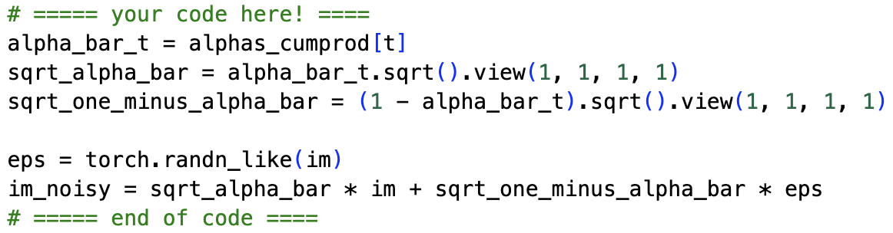the forward process-
Here are the Campanile at noise level [250, 500, 750]:
 Berkeley Campanile
Berkeley Campanile Noisy Campanile at t=250
Noisy Campanile at t=250 Noisy Campanile at t=500
Noisy Campanile at t=500 Noisy Campanile at t=750
Noisy Campanile at t=750
Using classical method (i.e. Gaussian Blurring) to denoise the above images is hard. I tried my best to denoise them by increasing the Gaussian kernal size w.r.t larger noise step, but it's still hard to identify the campanile when noise step gets larger.
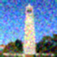Gaussian Blur Denoising at t=250 Gaussian Blur Denoising at t=500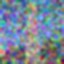Gaussian Blur Denoising at t=250
Gaussian Blur Denoising at t=500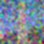Gaussian Blur Denoising at t=250
It would be a better choice to use One-Step Denoising by the stage_1.unet of the DeepFloyd model. The model takes in the [noise image, prompt "a high quality photo", noise step t], and outputs the estimated one-step noise e. We can use the reverse formula to get clean x_0:
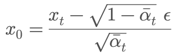Here are the results:
One-Step Denoised Campanile at t=250One-Step Denoised Campanile at t=500One-Step Denoised Campanile at t=750
To achieve even better denoising outcome, we can use iterative denoising. We can iteratively denoise from t=990 to t=0, with a stride=30. To do this, first I implemented a strided_timesteps list, which contains timesteps like 990,960,930...,60,30,0, and also initialize the timesteps to stage_1 model using the function stage_1.scheduler.set_timesteps(timesteps=strided_timesteps):
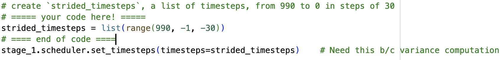-
Then I implemented the iterative_denoise function, which translates the following iterative denoise formula:
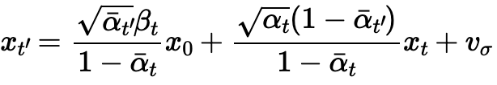to code:
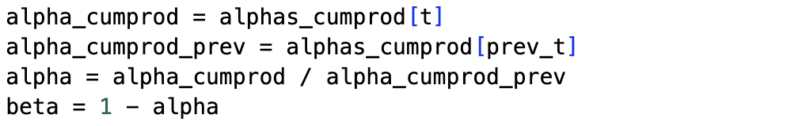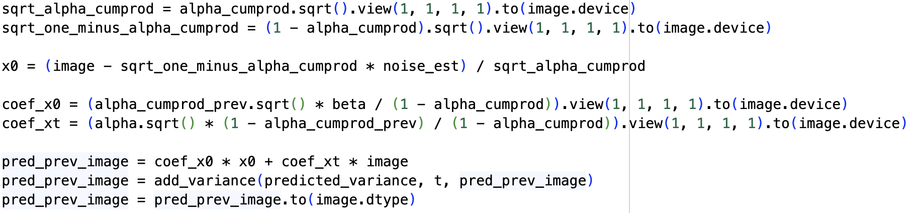 -
After that, I tried to add noise to the Campanilie picture to timestep[10], which is equivalent to t=690, and denoise back with stride=30 till t=0. I saved the progress every 5 timestep (i.e. every t=150 steps). I compared the final result with one-step denoising and Gaussian Blurring, finding the iterative denoise versions achieves the best result.
Noisy Campanile at t=90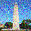Noisy Campanile at t=240 Noisy Campanile at t=390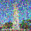Noisy Campanile at t=540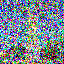Noisy Campanile at t=690
Noisy Campanile at t=390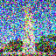Noisy Campanile at t=540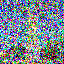Noisy Campanile at t=690 original CampanilieIteratively Denoised Campanile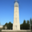One-Step Denoised Campanile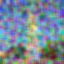Gaussian Blurred Campanile
original CampanilieIteratively Denoised Campanile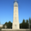One-Step Denoised Campanile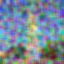Gaussian Blurred Campanile
To generate arbitarily denoised images, we could add noise to the Campanile image to time t=1000 (let i_start = 0), which tranforms it into a pure noise image. Then we perform the same iteratively denoise process till time =0, and see what kind of clean images the model would output:
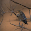sample1 sample2sample3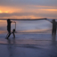sample4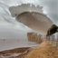sample5
sample2sample3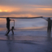sample4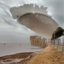sample5
To make the above randomly sampled images perform higher quality, we can adopt the CFG trick: which is that at each denoising stage, we run the model twice, one with prompt "a high quality photo", another with null prompt. Then we do weighted average to the output noise and run a strided denoising step. Here are the critical code snippets in the function iterative_denoise_cfg:
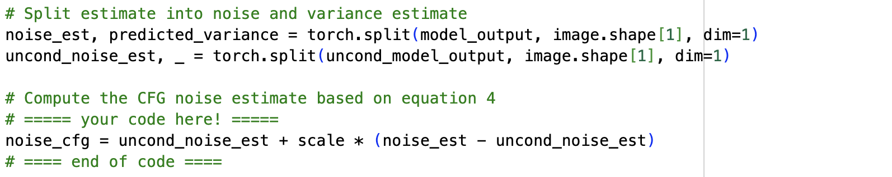code snippets of weighted averaging noiseHere are five sampled diffution output images using CFG. The quality is much higher than that in the previous srection.
sample1sample2sample3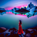sample4sample5
We know that the model tends to be more "hallucinative" when we add more noise to the original picture and use the model to denoise it back. The following are edits of the Campanile image, using the given prompt at noise levels [1, 3, 5, 7, 10, 20] with the conditional text prompt "a high quality photo":
SDEdit with i_start=1SDEdit with i_start=3SDEdit with i_start=5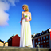SDEdit with i_start=7 SDEdit with i_start=10SDEdit with i_start=20
original companile
SDEdit with i_start=10SDEdit with i_start=20
original companileI also tested this on two of my own pictures:
SDEdit with i_start=1 SDEdit with i_start=3SDEdit with i_start=5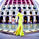SDEdit with i_start=7SDEdit with i_start=10SDEdit with i_start=20original companileSDEdit with i_start=1SDEdit with i_start=3SDEdit with i_start=5SDEdit with i_start=7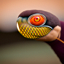SDEdit with i_start=10SDEdit with i_start=20original companile
SDEdit with i_start=3SDEdit with i_start=5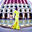SDEdit with i_start=7SDEdit with i_start=10SDEdit with i_start=20original companileSDEdit with i_start=1SDEdit with i_start=3SDEdit with i_start=5SDEdit with i_start=7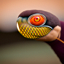SDEdit with i_start=10SDEdit with i_start=20original companile
When we start with some nonrealistic images (e.g. painting, a sketch, some scribbles), the above pipeline tends to project it onto the natural image manifold. For example, the following pixel-style face from the web:
SDEdit with i_start=1SDEdit with i_start=3SDEdit with i_start=5SDEdit with i_start=7SDEdit with i_start=10SDEdit with i_start=20original web picI also tested this on two pictures drawn by myself:
SDEdit with i_start=1SDEdit with i_start=3SDEdit with i_start=5SDEdit with i_start=7SDEdit with i_start=10SDEdit with i_start=20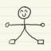original stickmanSDEdit with i_start=1SDEdit with i_start=3SDEdit with i_start=5SDEdit with i_start=7SDEdit with i_start=10SDEdit with i_start=20original germ
We can also use this process to do inpainting. That is, given a mask, the diffusion process only edits the area where the mask is 1. To realize this, at every diffusing step when we get the result x_t, we only keep the unmasked area, and replace the masked area with the original corresponding image at that stage. The following is the critical part of the inpainting function:
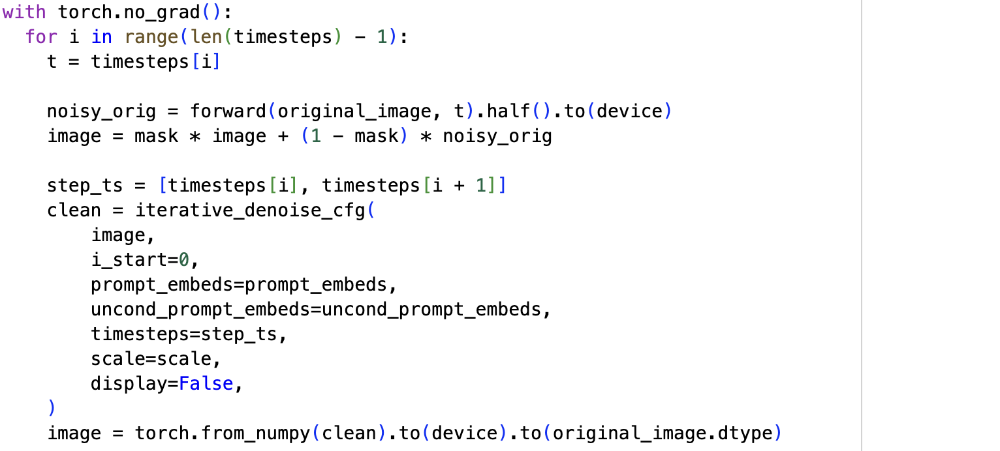-
Here I first inpainted the Companile using my own mask:
Orginal Companile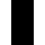The mask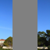Area to replaceThe inpainted picture I also tested this on two pictures drawn by myself:
Orginal Airplane The maskArea to replaceThe inpainted picture
The maskArea to replaceThe inpainted picture Orginal Companile
Orginal Companile The mask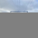Area to replace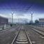The inpainted picture
The mask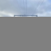Area to replace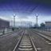The inpainted picture
Now, we will do the same thing as the previous section, but guide the projection with a text prompt.
Here is the version of berkeley Campanile with the prompt:"a wide angle photo of the campanile reflected in a rain puddle at night":
SDEdit with i_start=1SDEdit with i_start=3SDEdit with i_start=5SDEdit with i_start=7SDEdit with i_start=10SDEdit with i_start=20
original campanileI also tested this on two pictures drawn by myself:
Prompt: "a watercolor painting of robots studying under paper lanterns in a quiet library"
SDEdit with i_start=1SDEdit with i_start=3SDEdit with i_start=5SDEdit with i_start=7SDEdit with i_start=10SDEdit with i_start=20original robotPrompt: "an aerial photograph of terraced rice fields shaped like a spiral galaxy"
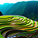SDEdit with i_start=1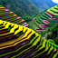SDEdit with i_start=3SDEdit with i_start=5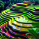SDEdit with i_start=7SDEdit with i_start=10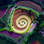SDEdit with i_start=20original galaxy
Then, I implemented a visual anagram using diffusion. The picture describes different scenes when fliped upsidedown. To do this, I did two CFGs in one timestep, one for upright picture and one for upside uown picture, and then average them together
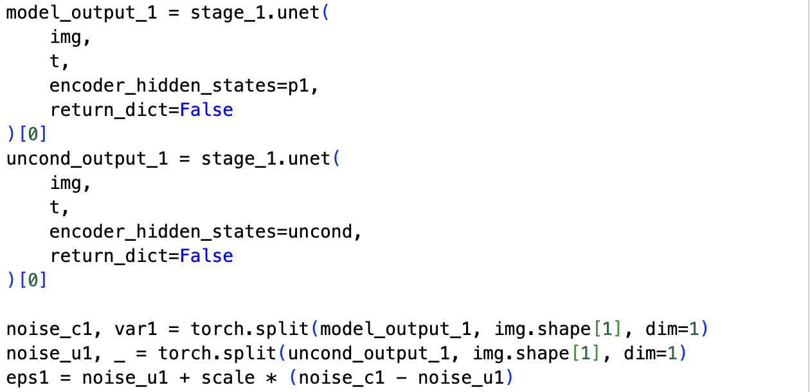CFG for upright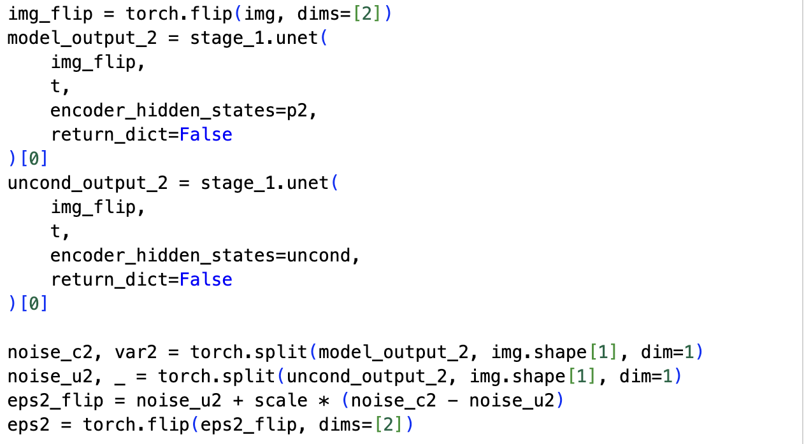CFG for upsidedown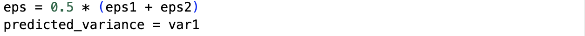merge the noise together-
p1 = "an oil painting of paper lanterns floating in a circle on a lake at night"
p2 = "an oil painting of a dragon's face made of glowing scales in the dark"
 upright
upright upsidedown
upsidedown
Part 2: Fit a Neural Radiance Field from Multi-view Images
1 section in totalIn this section, I managed to load data from Lego scene provided in the course website, and plot the cameras, rays, and samples in 3D using Viser.
To achieve this , firstly I wrote a function transform(c2w, x_c) to transform camera coordinate to world coordinate. Then I wrote a function pixel_to_camera(K, uv, s) to transform pixel coordinates to camera coordinates, given arbitary depth s. Finally I wrote a function pixel_to_ray(K, c2w, uv, depth) to get the unit ray that shoot from a certain pixel of the camera. The detailed implementation is shown below.
 transform(c2w, x_c)
transform(c2w, x_c) pixel_to_camera(K, uv, s)
pixel_to_camera(K, uv, s) pixel_to_ray(K, c2w, uv, depth)
pixel_to_ray(K, c2w, uv, depth)I used the second method mentioned in the official website, which randomly pick N rays and sample along them finally return the world coordinates of those points. The detailed procedure is shown in the picture below
 Sample along rays function
Sample along rays function-
After doing the above procedure, I integrate the above tools to a RaysDataset class. This RaysDataset class precomputes all rays for every training image so we can sample them efficiently during NeRF training. It builds a pixel grid, converts each pixel into a ray using the camera intrinsics and extrinsics, and stores the ray origins, directions, and corresponding RGB values in flattened form. During training, we can randomly draw a batch of rays from the entire dataset or from a specific camera for debugging. This makes the dataloader simple, fast, and convenient for both global sampling and visualization in Part 2.3.
Then, I implemented a visualization function visualize_random_rays(dataset, K, num_rays, n_samples=) that helps visualize the dataset using Viser, following the code structure provided in the official website. These are two of the visualized results:
 Visualization with random rays
Visualization with random rays Visualization with rays from a single camera
Visualization with rays from a single camera
In this section, I managed to train a Nerf using the lego dataset.
To achieve this , firstly I implemented the nerf model.the NeRF model follows the standard design proposed in the original paper. I apply sinusoidal positional encoding to both 3D positions and view directions, using higher-frequency bands for positions and lower-frequency ones for directions. The network is built as an eight-layer MLP with a skip connection at the middle layer, which helps preserve high-frequency details during training. The density (sigma) and color branches are separated: sigma is predicted directly from the spatial features, while RGB is produced by combining learned features with the encoded viewing direction. A final sigmoid ensures valid color outputs.
To train the NeRF model, I implemented the volume rendering function as indeicated in the instruction. Then, I randomly sample a large batch of rays at each iteration and generate points along them with stratified sampling. The network is optimized using Adam with a learning rate of 5 \times 10^{-4}, batch size 8192, and 64 samples per ray. I trained for 5000 iterations on Google Colab T4 GPU. During training, I rendered a validation image every 250 iterations to track progress. PSNR is used as the main evaluation metric, and I log both training loss and validation PSNR to monitor convergence. This setup provides stable optimization and reproduces the expected NeRF performance on the Lego dataset. Here are the rendering results during training:
 the first iteration
the first iteration the 250th iteration
the 250th iteration the 750th iteration
the 750th iteration the 1500th iteration
the 1500th iteration the 5000th iteration
the 5000th iterationAnd here is the PSNR curve:
 the PSNR curve during trainig
the PSNR curve during trainigFinally, here is the GIF of camera circling the lego car
 Spherical rendering video of the Lego
Spherical rendering video of the Lego-
Then I tested using my own dataset. I found that near=0.3 far=0.7 is suitable for my dataset. I set n_samples=64, batch_size=4096, max_iters=5000, lr=5e-4, and the rest of the hyperparameters are the same as above.During implementation, I found that the model failed to converge when trained on my first set of images. The PSNR stayed extremely low and the rendered results were almost blank. After debugging, I realized the issue was not in the code, but in the dataset: most views contained large backgrounds, very small objects, and almost no parallax. NeRF simply couldn’t recover meaningful geometry. To fix this, I reshot the entire dataset, keeping the object centered, increasing the number of viewpoints, and making sure the camera moved around it in a full circle. After these adjustments, training became much better, though the outcome isn't satisfying enough.
 my new dataset after realizing the problem
my new dataset after realizing the problemHere are the progress during training:
 the first iteration
the first iteration the 250th iteration
the 250th iteration the 500th iteration
the 500th iteration the 1000th iteration
the 1000th iteration the 2750th iteration
the 2750th iteration the 5000th iteration
the 5000th iterationAnd here is the PSNR curve and Loss function:
 the PSNR curve during trainig
the PSNR curve during trainig the LOSS curve during trainig
the LOSS curve during trainigFinally, here is the GIF of camera circling my own object
 Spherical rendering video of my own dataset
Spherical rendering video of my own dataset